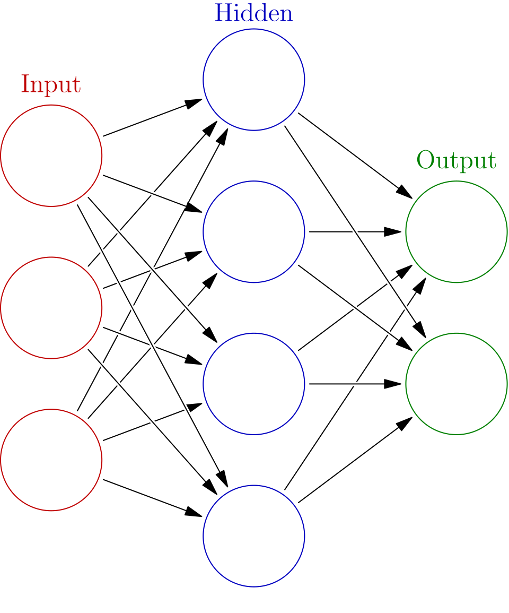

The AI Family Tree
Machine Learning, Deep Learning and Generative AI Explained
Read a few news articles about technology and you will find the same words again and again: AI, algorithm, machine learning, neural network, deep learning, generative AI, ChatGPT. They are often used as if they meant the same thing. They don't. These terms fit inside each other like Russian dolls: today's generative AI is built with deep learning, deep learning is a kind of machine learning, and machine learning is one part of AI. But not the other way around: not all AI learns, and not all AI creates.
Artificial Intelligence: The Biggest Doll

AI is the whole field: any technology that lets a machine perform tasks we associate with human intelligence. It includes systems that learn from data, but also older systems based on rules written by people. The expert systems of the 1980s, for example, used thousands of "if this, then that" rules written together with doctors or engineers. They were AI, but they did not learn anything. The History of AI section tells what happened to them.
Machine Learning: Learning From Examples
Machine learning is the part of AI in which a computer learns patterns from data instead of following rules written for every situation. A spam filter is the classic example: instead of a list of forbidden words, it gets thousands of emails already marked as "spam" or "not spam", finds the patterns, and uses them on emails it has never seen before.
Three words are often confused here:
- An algorithm is a set of instructions. In machine learning, it is the method used to learn, like a recipe.
- A model is the result of that learning: the finished system that receives new inputs and produces outputs. If the algorithm is the recipe, the model is the cake.
- Training is the process in which the algorithm looks at the examples and builds the model. Using the model afterwards, on new data, is called inference.
The articles "Machine Learning" and "Data and Training" on this website explain how it works step by step.
Deep Learning: Many Layers
Deep learning is a branch of machine learning that uses neural networks with many layers. A neural network is a mathematical structure loosely inspired by the neurons in the brain: it is made of small units connected to each other, and each connection has a weight, a number that decides how much it counts. IBM describes weights as "dials that control how strongly each input feature influences the decision". The word "deep" only means that there are many layers, one after the other.

The word "neural" can be misleading. Neural networks are not digital copies of the human brain. They are made of numbers and calculations, and they learn in a very different way from us. What they are very good at is finding complex patterns in images, sound and text. Since around 2012, deep learning has been behind most of the big progress in AI, from face recognition to translation, as the History of AI section shows.
Generative AI: Creating New Content
For a long time, most AI was used to recognize and predict: is this email spam, is there a cat in this photo, how long will the trip take? Generative AI does something different. It produces new content: text, images, audio, video or computer code, based on the patterns it learned during training. IBM describes it as deep learning models "that can create complex original content".
Large language models, or LLMs, are generative AI for text. They are trained on huge amounts of writing and learn to continue a text one small piece at a time. A chatbot like ChatGPT, Gemini or Claude is an app built on top of an LLM. So ChatGPT is not "AI" itself: it is one product, from one company, in the smallest of our dolls. The article "Generative AI" on this website shows what these tools can do.
Cheat Sheet
- Artificial intelligence: the whole field of machines doing tasks associated with intelligence.
- Machine learning: AI that learns patterns from data.
- Deep learning: machine learning with neural networks of many layers.
- Generative AI: AI that creates new content.
- Algorithm: the instructions, or the method used to learn.
- Model: the result of training, the system that is actually used.
- Training data: the examples the model learns from.
- Weights (or parameters): the numbers inside a model that change during training.
- Inference: using a trained model on new inputs.
- Large language model (LLM): a generative model for text.
- Chatbot: an app you talk to, often built on an LLM.
Now that we know the names of the dolls, one question is left: how far can they go? The next article looks at narrow AI, general AI, and the limits of today's systems.
Sources
Image credits
- Russian Matroshka no bg by Fanghong, derivative work by Gnomz007, CC BY-SA 3.0, via Wikimedia Commons
- Colored neural network by Glosser.ca, CC BY-SA 3.0, via Wikimedia Commons